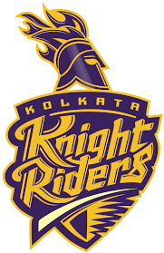
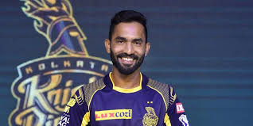

KOLKATA KNIGHT RIDERS

The Kolkata Knight Riders (KKR) are a franchise cricket team representing the city of Kolkata in the Indian
Premier League. The franchise is owned by Bollywood actor Shah Rukh Khan, actress Juhi Chawla and her spouse
Jay Mehta. The home of the Knight Riders is the iconic Eden Gardens stadium.
The franchise, which has gained immense popularity due to its association with celebrity owners, qualified
for the IPL playoffs for the first time in 2011. They became the IPL champions in 2012, by defeating Chennai
Super Kings in the final. They repeated the feat in 2014, defeating Kings XI Punjab. The Knight Riders
hold the record for the longest winning streak by any Indian team in T20s (14).
The leading run-scorer of the side is Gautam Gambhir, while the leading wicket-taker is Sunil Narine.
The official theme of the team is Korbo, Lorbo, Jeetbo Re (we will perform, fight and win!) and the official
colours are purple and gold. The brand value of the Knight Riders was estimated at $104 million in 2018,
second highest among IPL franchises. In 2019, their value was estimated at ₹629 crore (US$88
million.
The home venue of the Knight Riders is the iconic Eden Gardens (with the two ends of the crease called the
High Court End and the Club House End). Owned by the Cricket Association of Bengal, it was the largest
cricket stadium in India and had a seating capacity of over 90,000. In 2011, the stadium was renovated
to meet the standards set by the International Cricket Council for the 2011 Cricket World Cup; reducing its
capacity to around 68,000. The renovated stadium includes a new clubhouse and players' facilities, upgrading
the exterior wall, cladding the existing roof structure with a new metal skin, and general infrastructure
improvements. In 2013, two of the team's home matches were hosted by the JSCA International Cricket
Stadium in Ranchi.
CAPTAIN

Dinesh Karthik (born 1 June 1985) is an Indian wicket-keeper and batsman who made his debut for the Indian
cricket team in 2004. He became captain of the Kolkata Knight Riders ahead of the 2018 Indian Premier League
season.
He made his maiden Test century against Bangladesh and was India's leading scorer in their Test tour of
England, helping India win their first series in England in 21 years. After a drop in form in September
2007, Dinesh Karthik was dropped from the Test team. He has made only sporadic international appearances
since then, although he continues to score well domestically.
Karthik played in the 2008 Indian Premier League as wicket-keeper for the Delhi Daredevils, scoring 145 runs
at 24.16 with a strike rate of 135.51. His highest score was an unbeaten 56 to steer Delhi to a
five-wicket win in a group match against the Mumbai Indians. In the 2009 Indian Premier League hosted by
South Africa, Karthik played in each of Delhi's 15 matches. He scored 288 runs at 36.00, passing 40 on three
occasions and making 17 dismissals. Although Delhi topped the tournament's pool stage, Karthik made only
nine in the semi-final and Delhi were defeated by six wickets by the Deccan Chargers.
He was bought by Kings XI Punjab in 2011 for $900,000, making him the second-most-expensive player on their
squad. For the 2012 Indian Premier League, Karthik joined Mumbai Indians for a reported $2.35 million.
He was again bought by Delhi in 2014, by Royal Challengers Bangalore in 2015 and in 2016 by the Gujarat
Lions, who retained him for the 2017 season. Karthik was named wicket-keeper of the IPL XI of the tournament
in 2017 by CricBuzz. He was bought by the Kolkata Knight Riders for the 2018 IPL season (replacing
Gautam Gambhir), and led the team to the playoffs.[ For his performance in the 2018 IPL season, Karthik
was named to the Cricinfo and CricBuzz IPL XI